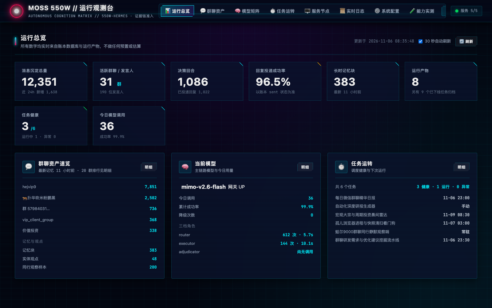
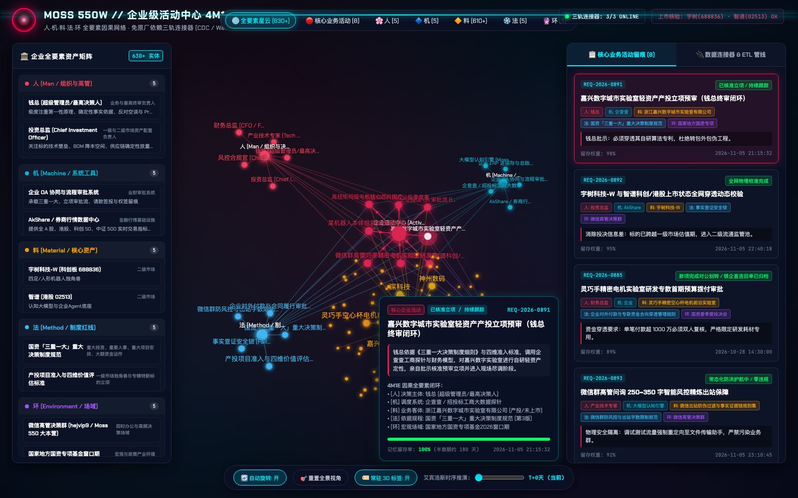
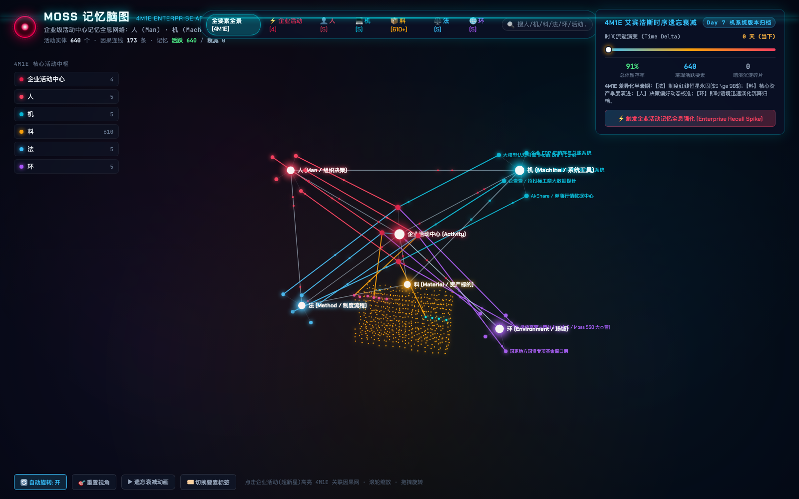
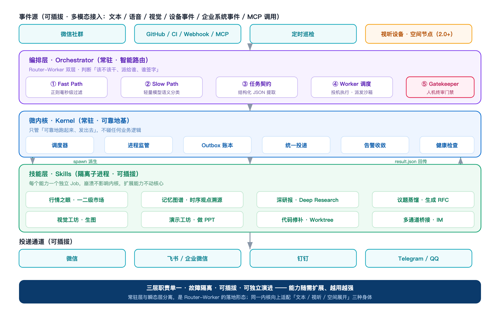
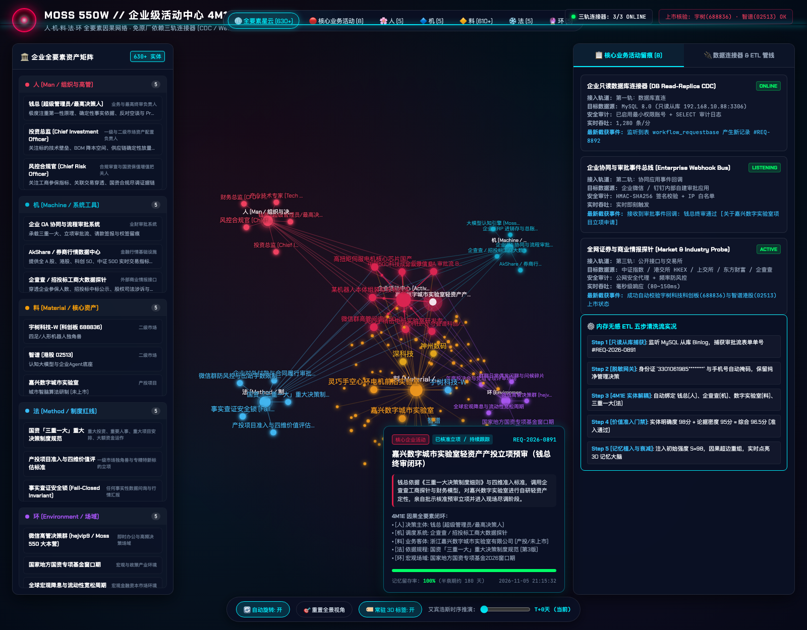
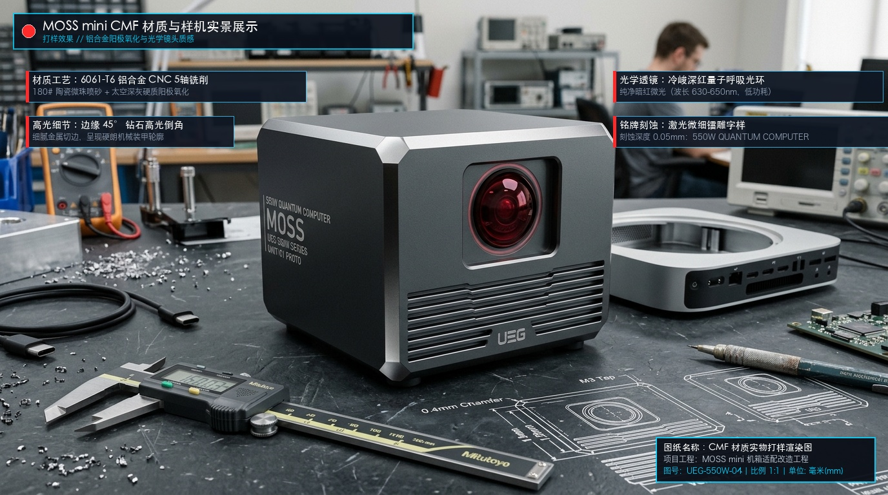

核心第一性原理
上下文优先律
智能的物理本质是上下文：为什么绝大多数 Agent 根在数据与状态工程？
很多时候 Agent 表现失常不是模型参数不够，而是工程层未给足真实、高保真、时序对齐的上下文物理证据。从政企数据要素的“双域流转”经验来看，给模型输入干净确定、可溯源的数据管道，远比调玄学 Prompt 坚固百倍。
阅读深度手记
你好，我是 钱胤卿。一个兼具复杂政企数字系统工程攻坚与前沿 AI 研发热情的实战派。 深耕数字化改革、大数据治理与数据要素市场十余年，累计主导及深度推进重大项目金额超 1.2 亿元。 在某市数据产业公共服务平台建设中担纲项目 · 产品 · 数据全栈统筹； 基于实战中沉淀的第一性原理，发起并开源 MOSS 轻量智能体基础框架与最新设计蓝图。
服务地方重点大数据发展集团，构建国内领先的“双域融合 + 五端协同 + 区块链与隐私计算底座”数据要素市场化全生命周期基础设施。
全面负责公司级重大项目推进与客户深度服务；主持编写 20 余项数据要素合规流通制度体系；组织完成安全检查制度补充、标杆申报与核心交付，获客户官方书面感谢信。
主导顶层功能与业务闭环规划：设计“门户（前台供需）+ 实验 / 经营 / 交付 / 安全四端（后台协同）”产品矩阵；实现用户身份统一（SSO）、工位预约与交易所无缝打通。
落地“互联网域（开放实验室）+ 政务网域（高敏数据）”双域融合架构；集成区块链存证溯源底座、隐私计算、中转服务跨域单向同步，实现“可用不可见、可控可计量”。
互联网域服务社会流通供需，政务网域承载高管控核心数据。通过集群中转服务与安全网关实现严格受控跨域交互。
门户端（供需商品浏览）、实验端（场景加工验证）、经营端（目录审计）、交付端（合规审查）与运维端五位一体。
关键数据流转与授权全部通过区块链存证上链，对接隐私计算多方安全协同，满足《数安法》《个保法》合规底线。
无缝直连国家级与省市重点大数据交易枢纽，支持加工产物与数据产品一键跨平台挂牌上架交易。
轻量级自主 Agent 极简工程内核与自主可控执行引擎
MOSS 是在经历了多年千万级复杂系统治理、数据要素合规流转与前沿大模型工程落地后，沉淀出的一套反虚浮、重实证、物理可控的轻量开源 Agent 基础框架。 彻底杜绝臃肿黑盒框架绑架，在本站开源极简核心代码，并公开脱敏后的最新全套系统界面视窗、时序记忆引擎拓扑与工业设计蓝图。

常驻全局导航枢纽，实时呈现 Agent 运行状态、上下文意图流动及业务调度总览。

人、机、料、法、环物理语义关联，为大模型推理提供坚固的产业上下文证据链。

模拟人类大脑遗忘曲线，实现长短期记忆自主加权、动态蒸馏与时序对齐。

上层意图调度 ➔ 中层记忆图谱与执行内核 ➔ 底层工具与异构算力基础设施。

无缝连接企业办公端（微信/钉钉）、移动终端与本地守护进程，实现端云安全协同。

探索自主可控本地算力盒子与端侧 AI 一体机的 CMF 工业设计理念。
“很多情况 Agent 不是缺少智能，而是缺少上下文。” 大模型本质是基于上下文的概率推理机。MOSS 拒绝玄学调参，构建端侧常驻状态、时序记忆星图与现场一手凭证管道，彻底消灭虚假无源推理。
“只有看到系统运行不符合预期时，才知道自己实际要的是什么。” 反对停留在自然语言假想中臆造复杂架构。坚持以“垂直切片与最小可运行闭环”先行落地，用物理代码和实跑碰撞暴露边界、消灭伪需求。
“源码公开透明，Agent 一读就知道每个模块是干什么用的。” 杜绝黑盒大一统框架。将架构严格切分为 Router（高维路由）、Executor（确定性执行）、Memory（记忆引擎）与 Bridge（端侧出站），极简透明、随调随测。
严禁“改 Prompt 碰运气”和“打地鼠式单测硬编码特例”。推行物理因果链路穿透、默认退化诚实安全锁（Fail-Closed Invariant）与反脆弱性单测门禁，保障系统面对未知第 N+1 个输入时不崩溃。
// 极简透明模块化目录契约
moss/
├── router/ # 意图路由器 (语义分类)
├── executor/ # 执行器 (确定性工具链)
├── memory/ # 时序记忆与端侧常驻状态
├── gate/ # N+1 泛化与安全锁门禁
└── bridge/ # 多端协议与事件桥接器
“驾驭顶级模型干一个公司的活；顶级模型用于架构定型后的全量重构，而不是在混乱泥潭中打补丁。” 以专家架构为骨架，赋能 Agent 开展端到端高密度重构。
多年来负责或深度参与的省市级千万级工程，经受国家级、省委主要领导考察及客户高度赞誉。
在无后端支持和公司无新材料积累情况下独立驻场，完成售前、可研与领导汇报原型设计。获华为首位点名表扬，成为后续大量合作基石；获省委主要领导考察。
承担商务与解决方案双重职责。摸清区域工业本底形成数据资产，用数据价值化新模式赋能产业集聚。被客户多次表扬，并被经信局指定借调。
承担商务、解决方案、产品设计与项目经理全流程。获国家级与省部级领导高度认可，获评省级数字化改革最佳应用；获地方主要领导点名表扬并陪同汇报。
担任项目主要负责人，协调腾讯、移动等多厂商集成，组织谋划领导拜访与宣传发布。获市委市政府高度认可，受邀进入全市数字化改革专班。
负责军民融合项目对接与实施落地，推进交通视觉智能感知系统与市级政务系统的平稳上线。当选年度销售冠军与优秀员工。
推动干部学院云桌面(400万)、老年大学智慧校园(500万)、智慧环保一期(200万)等多个大型云计算与智慧化项目平稳交付。
不谈空洞概念，只聊从政企千万级实战与 AI 研发中沉淀的物理第一性原理。
很多时候 Agent 表现失常不是模型参数不够，而是工程层未给足真实、高保真、时序对齐的上下文物理证据。从政企数据要素的“双域流转”经验来看，给模型输入干净确定、可溯源的数据管道，远比调玄学 Prompt 坚固百倍。
在需求未经过端到端垂直切片检验前，不要臆造复杂流程；当输出产生偏差时，严禁通过硬编码单测特例来逆向拟合业务。必须坚守 N+1 泛化性门禁与因果链路穿透，让系统具备自我愈合的反脆弱性。
结合某市数据公共服务平台实践，剖析多方联合计算与跨域加密中转。大模型要想在涉及高敏财务、医疗与政务业务中落地，必须引入区块链存证确权与基于密码学的隐私计算保护，确保操作可查、调用可计量。
开源软件源码公开透明，Agent 一读就知道每个模块是干什么用的。坚决杜绝臃肿黑盒框架绑架与单体泥潭。系统必须职责单一，Router 路由、Executor 执行、Memory 记忆各司其职，源码透明可测，方能支撑顶模全量重构。
权威技术水平评定
国际与头部云厂商认证
真实权威背书
点名表扬在数据合规流通平台建设中的关键业务支撑
作为民营企业专家被政府部门指定抽调开展数据赋能
“新材云创”项目现场服务获得华为技术团队首位点名表彰
无论是关于 MOSS 基础框架共建、数据要素平台顶层设计，还是 AI 产品商业化与落地，我始终保持开放与真诚。欢迎随时沟通、交流与合作。
可直接添加微信并备注来意，以下方向均可深入探讨：